Éléments d'anatomie
Si vous vous intéressez à la création de jeux sur le plan graphique, vous risquez très fortement d'avoir un jour ou l'autre à dessiner des êtres humains ou du moins des créatures dont l'anatomie s'en rapproche. Certains me diront : « Je dessine dans un style particulier, pourquoi apprendre l'anatomie ? ». D'une part, on ne sait jamais d'avance si on ne sera pas amené à un moment ou un autre à devoir réaliser des illustrations « réalistes ». D'autre part, connaître et maîtriser les bases théoriques du dessin « classique » permet de mieux styliser, même pour des styles très éloignés du réel.
Cet article vise à dégager quelques conseils pour se lancer dans l'apprentissage de l'anatomie. Il est volontairement simple et se limite à ce qui me semble être l'essentiel pour débuter : j'ai essayé d'y mettre ce que j'aurais voulu qu'on me dise quand j'ai commencé à dessiner. Pour un cours plus poussé, je vous invite à jeter un œil aux références proposées dans la conclusion de cet article. Je tiens à préciser que cet article n'est pas un « cours » à proprement parler et qu'il s'y trouve sans doute un certain nombre d'oublis (et d'erreurs), j'essayerai donc de le mettre à jour aussi régulièrement que possible :)
Du plus simple au plus complexe.
Je vois souvent des gens qui, pour s'entraîner à l'anatomie, essayent de copier des références photographiques jusqu'à avoir une ressemblance parfaite. Je pense que ce n'est pas une très bonne façon de s'y prendre. En raisonnant de cette façon, on ne cherche qu'à imiter ce qu'on voit sans comprendre comment ça fonctionne. Si vous essayez de travailler l'animation de personnages, cette méthode ne vous expliquera pas comment le corps humain bouge, se déplace, se déforme. Par ailleurs, ceci ne vous donnera pas une bonne notion de volume mais seulement un bon rendu 2D. En général, ça se repère très vite : les dessins réalisés avec référence photographique sont beaucoup moins bons que ceux réalisés sans et on a souvent l'impression d'un collage, d'un « effet 2D » mais pas d'un bon volume (ça aboutit souvent à ce que les anglophones appellent « flat face »). Non pas que les références photographiques soient inutiles (on n'a pas tous les jours la chance de disposer d'un modèle vivant), mais elles doivent être utilisées à bon escient.
Une autre façon de procéder que j'ai souvent vue sur des forums de graphisme, c'est d'essayer d'apprendre le nom et les emplacements de tous les muscles et de tous les os du corps humain. Ce n'est pas absurde comme façon de procéder, c'est très analytique mais ce n'est peut-être pas une bonne façon de commencer. Souvent, les gens qui commencent par là mettent beaucoup de temps avant de pouvoir construire une silhouette correcte et on a l'impression qu'ils accumulent tous les muscles du corps sans réussir à les faire « tenir » sous la peau. Et généralement, c'est un peu aride de dessiner des pages et des pages de rotules avant de s'autoriser de dessiner le moindre bonhomme (ça peut paraître caricatural, mais un bon nombre de sketchbooks de débutants commence de cette façons sur de gros forums de graphisme comme conceptart.org).
Je crois (et je le répète, c'est un point de vue qui n'engage que moi) qu'avant de se lancer dans l'anatomie au « sens médical » du terme, il faut d'abord s'intéresser à la question des proportions et de la silhouette. D'une manière générale en dessin (et dans beaucoup d'autres domaines), c'est une bonne chose de partir du plus simple pour aller au plus complexe. Ainsi, avant de vouloir s'attaquer à un rendu photo-réaliste ou à une connaissance pointue de la structure du corps humain, il est plus important de savoir poser une silhouette simple, mais bien proportionnée. Le dessin suivant sert à illustrer ce processus : je pars d'un stickman tout bête qui va devenir un mannequin, puis se doter de muscles, d'une peau, de cheveux et de poils, de vêtements et finalement, d'ombre et de lumière.
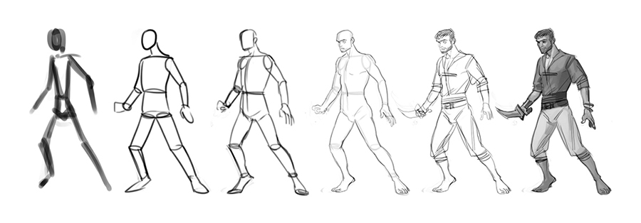
Proportions et repères.
Je vais présenter ici un certain nombre de rapports de proportion qui se conservent plus ou moins dans le corps humain. Il s'agit d'un modèle classique, qui n'est pas forcément universellement vérifié (il est un peu idéalisé) mais qui donne de bonnes bases pour commencer à apprendre. Les règles qui suivent ne sont pas absolues et c'est à vous de jouer avec pour réussir à produire de la variété dans les personnages que vous dessinez.
Le corps.
Pour découper le corps verticalement, le plus simple consiste à le décomposer en huit têtes. Vous me demanderez pourquoi huit et vous avez même peut-être entendu parler d'un canon anatomique à sept têtes. Il ne s'agit pas d'un absolu : on trouve des gens qui en hauteur font six ou neuf têtes et vous serez sans doute amené à tricher avec ces divisions si vous dessinez des personnages fantastiques. Mais l'avantage du modèle à huit, c'est qu'il est facile de diviser un segment en huit : vous placez un segment vertical dans votre décor, qui donne la hauteur de votre personnage, vous le découpez en deux, puis vous recoupez en deux chaque segment et vous recoupez encore. Diviser en sept, c'est nettement plus complexe, vous en conviendrez :p
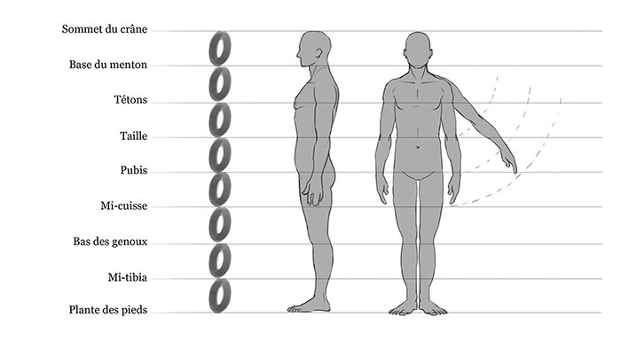
Ce découpage en huit têtes vous permet de placer différents repères. Ces proportions, même quand le corps se déforme, se conservent : par exemple, si vous tendez le bras du personnage, vous devez pouvoir les retrouver en traçant ces arcs-de-cercle que vous voyez sur le dessin (en règle générale, utilisez les cercles pour reporter une longueur).
Il y a un certain nombre de repères que je trouve personnellement très utiles :
- Le pubis arrive pile-poil à mi-hauteur du corps : ce repère est particulièrement important si vous faîtes du dessin d'observation et il est toujours vérifié.
- Lorsque le bras est relâché le long du corps, la saignée du coude arrive au niveau de la taille.
- Lorsque le bras est relâché le long du corps, le poignet arrive au niveau de l'aine.
- Lorsque le bras est relâché le long du corps, le bout des doigts arrive à mi-cuisse.
- Le tibia est beaucoup plus droit qu'on ne le pense, ce qui donne cet effet de « décroché » au niveau de la jambe de profil (il vaut même mieux exagérer sa concavité que l'inverse).
La tête.
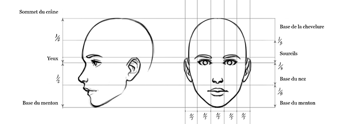
Pour structurer le visage, vous disposez principalement de deux découpages verticaux et d'un découpage horizontal : verticalement, les yeux partagent en deux le visage, de la base du menton jusqu'au sommet du crâne. Toujours verticalement, la zone entre l'implantation des cheveux et la base du menton est découpée en tiers égaux par la base du nez et les sourcils. Horizontalement enfin, on peut découper le visage en cinq yeux (il y a donc « un œil » d'espace entre les deux yeux). Vous retrouvez ces repères sur le schéma ci-dessus.
Par ailleurs :
- Les yeux sont à mi-hauteur de la tête (et non aux trois-quarts comme on le voit souvent) : ce repère est aussi très important et il est toujours vérifié.
- Les yeux sont espacés de la largeur d'un œil et la tête fait cinq yeux de large en tout.
- Les pupilles (au repos) et les commissures des lèvres sont alignées verticalement.
- Les oreilles font à peu près la même hauteur que le nez et sont plus ou moins alignées avec.
- De profil, l'oreille est collée à droite (sur l'image) d'une verticale qui sépare la tête en deux parts égales.
Les pieds et les mains.
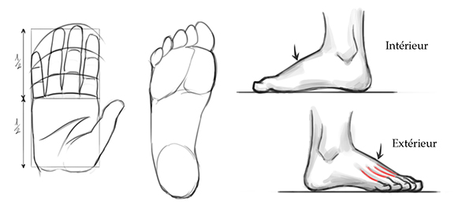
Il y a peu de repères sur la main mais malheureusement, ça ne vous rendra pas la tâche plus simple, bien au contraire. C'est un sujet qui pourrait nécessiter un article entier à lui seul, je me contenterai donc ici d'aller à l'essentiel. Pour le pied, pensez à le décomposer entre la pointe (séparée en deux parties) et le talon. Entre les deux, la voûte plantaire s'arque et ne touche pas le sol la plupart du temps (d'où l'allure de nos empreintes).
- Dans une main tendue, la taille de la paume est égale à la taille des doigts.
- Le pouce arrive à la moitié de la main tendue.
- Les doigts se découpent en trois phalanges (certains me diront que c'est très bête, mais je vois cette erreur suffisamment souvent pour la signaler).
- Grossièrement, la paume est carrée.
- Essayez de suivre des arcs lorsque vous dessinez des phalanges, ceci donne plus de mouvement.
- En raison de la structure des os, le dessus des pieds n'est pas concave, mais convexe : on y voit une bosse, plus ou moins prononcée, que j'ai indiquée par une flèche.
- Si on regarde l'extérieur du pied, on voit tous les orteils et pas seulement le plus petit.
- Quand le pied est tendu (c'est la même chose pour la main), les os apparaissent sous la peau et donnent lieu aux lignes indiquées en rouge sur le dessin.
À noter : pour vous entraîner à dessiner des pieds, les statues antiques constituent d'excellents modèles.
Les découpages présentés ici ne sont pas, je le rappelle, des absolus. L'idée est essentiellement d'avoir un jeu de proportions simple, mais efficace pour commencer, quitte à le modifier et à le transformer plus tard. Essayez de varier et de comparer à ce que vous pouvez observer dans la réalité.
Décomposition en volumes simples.
Maintenant que nous avons présenté des éléments de théorie sur le corps, intéressons nous maintenant à la pratique. Comment apprendre à dessiner un corps humain ?
L'idée consiste à simplifier le corps humain en volumes élémentaires, comme des cylindres ou des sphères, très simples donc, mais plus faciles à poser dans l'espace et à proportionner correctement. Imaginons que je veuille dessiner un personnage : je remplace son avant-bras par un cylindre (éventuellement un peu étréci), la tête par une sorte d'ovoïde, etc. J'obtiens un mannequin de ce style :
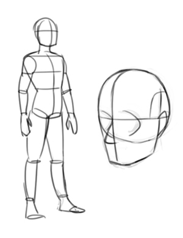
Celui-ci est certes simple, mais il est beaucoup plus facile à animer, à « mettre en pose », à placer dans l'espace. Par ailleurs, il est plus facile de vérifier les rapports de proportions sur celui-ci. Des volumes simples permettent de ne rien oublier, de penser en volume et non en 2D. Souvent, quand les gens pensent en termes de contour, les corps ont tendance à manquer d'épaisseur. Si jamais vous avez besoin de réaliser une pose complexe, c'est la meilleure façon d'avoir une base propre pour commencer à travailler. L'essentiel est donc, avant de se lancer dans le détail, d'avoir un mannequin bien posé qui servira de fondation solide pour le travail : ce qu'on recherche, c'est une bonne construction.
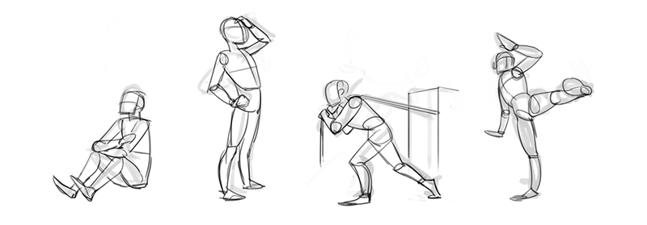
Pour les mains, on voit souvent les gens s'ingénier à dessiner chaque phalange comme un cylindre, mais à mon avis, c'est pousser le détail trop loin et ça a tendance à tuer le naturel dans le dessin des mains. Je vous recommanderais plutôt de vous limiter à un simple carré pour la paume et des traits sans épaisseur pour les doigts. Ça prend moins de place et c'est plus lisible, surtout sur des dessins de petite taille. Une variante consiste à dessiner la main sous la forme d'une « moufle », que vous pouvez améliorer en séparant l'index des autres doigts, comme ci-dessous. Ceci fonctionne aussi très bien pour les pieds.
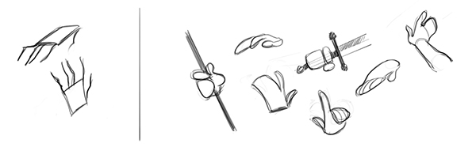
À vous de voir à quel point vous vous sentez à l'aise et quel type de simplification vous aide le plus. L'idée est de construire votre propre mannequin, pour pouvoir mieux poser vos dessins dans l'espace et leur donner un véritable volume. Si vous voulez travailler sur la solidité de votre dessin, essayez d'utiliser des formes très géométriques et de complexifier au maximum. Si vous voulez travailler sur la souplesse et le mouvement du dessin, essayez au contraire de le simplifier, par exemple en réduisant le dos du personnage au « S » de la colonne vertébrale. Même s'il est très simple au départ, vous aurez tendance à sophistiquer le mannequin avec l'expérience. Au fur et à mesure, vous y penserez de moins en moins et sans doute vous finirez par dessiner sans, mais c'est parce que dans une certaine mesure, vous l'aurez intériorisé. Personnellement, j'aime bien dessiner les jointures comme si elles étaient transparentes et ajouter les lignes médianes des objets (par exemple, la croix sur le visage), ça permet de mieux sentir les volumes.
De chair et d'os.
Maintenant, que nous avons vu les principes du mannequin et de la construction, parlons un peu d'anatomie à proprement parler. Je ne sais pas vraiment s'il est nécessaire de connaître le moindre os, le moindre tendon, le moindre muscle du corps humain pour bien dessiner, mais si on s'intéresse à ça, je pense qu'il vaut mieux commencer par un modèle simplifié. Ci-dessous, un modèle très simple avec le nom des principaux os et muscles (disons ceux auxquels vous aurez affaire en priorité). N'oubliez pas, ces muscles existent chez les hommes et les femmes, j'insiste.
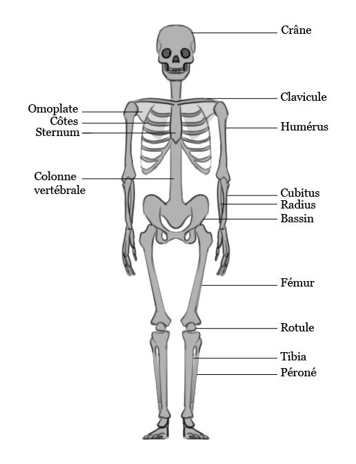
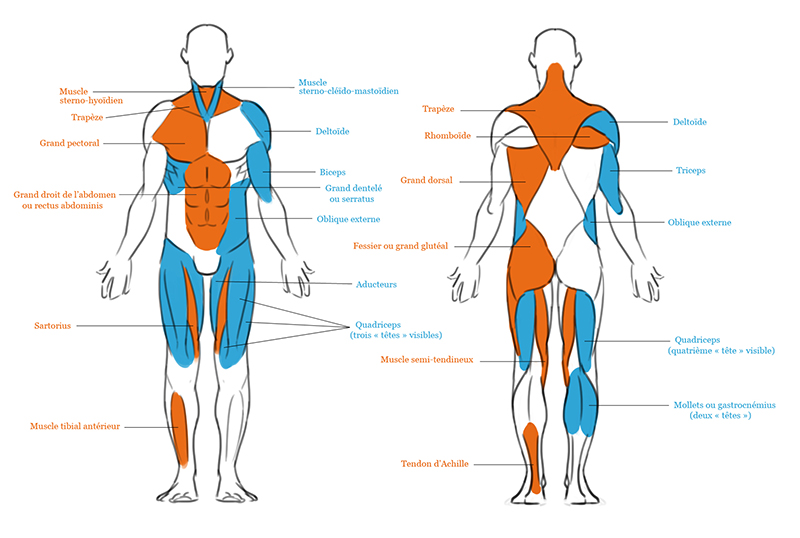
Pour les grandes versions, c'est par ici et ici.
Le bleu et l'orange ne sont là que pour distinguer les différents muscles, ils n'ont pas de signification particulière ici. Remarquez que les fémurs ont tendance à rentrer vers l'intérieur, mais pas les tibias (ça permet de mieux comprendre certaines torsions de la jambe). Par ailleurs, le quadriceps est bien constitué d'un seul muscle, mais divisé en quatre « ventres » ou « chefs » (d'où son nom), ce qui explique pourquoi on a l'impression de voir quatre muscles au lieu d'un.
Je vous avouerai au passage que je serai bien infoutu de vous détailler les quinze extenseurs du poignet et la structure des métatarses : retenez déjà l'essentiel et travaillez la construction, ce sera déjà beaucoup (et même beaucoup plus qu'un certain nombre de professionnels du jeu vidéo :p).
Le sexe (oh, comme c'est vendeur !)
Stéréotypes genrés.
Je vais maintenant me pencher sur un point assez délicat dans l'anatomie, la question de la représentation des sexes.
Dans le jeu vidéo et dans beaucoup d'autres médias, les sexes sont représentés de façon stéréotypés. En particulier, l'anatomie féminine est représentée de façon fantasmée (de gros seins, des tailles de guêpe, des jambes interminables), voire anatomiquement incorrecte (le tumblr Eschergirls se fait par exemple une spécialité d'épingler de telles dérives). D'une part, ce sont des représentations sexistes (et on ne parle même pas des costumes conçus pour exhiber le maximum de chair). D'autre part, d'un point de vue purement artistique, on perd toute la variété et la diversité anatomiques que la nature propose. Il y a des femmes avec de gros nez, avec des épaules carrées, il y a des hommes avec des traits fins, avec de longs cils : en tant que personnages, ils ne sont pas moins intéressants qu'une bimbo ou qu'un bodybuilder.
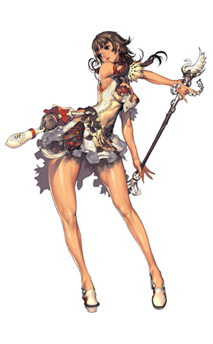
Il faut travailler à enrichir son vocabulaire graphique pour éviter les stéréotypes. On ne peut pas dessiner un personnage féminin correctement si on se contente de plaquer sur un corps les attributs supposés de la féminité : cils, lèvres, longs cheveux, etc. L'exemple-type, c'est cette façon de féminiser un personnage masculin en lui ajoutant des cils, un ruban et/ou du rose : c'est comme ça qu'on crée Minnie à partir de Mickey. Sans entrer dans l'étude de genre, les différences anatomiques homme-femme sont plus profondes, plus subtiles et moins marquées.
Précisons une fois de plus les choses : les observations que je présente ici ne sont que des tendances et pas des vérités absolues.
Répartition des graisses et silhouette.
La répartition des graisses se fait différemment chez les hommes et les femmes. Vous vous rappelez peut-être de cours de biologie où l'on vous a parlé de profils androïde et gynoïde de répartition des graisses.
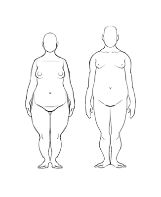
Chez les femmes, les graisses ont tendance à s'accumuler préférentiellement sur les fesses, les cuisses et les hanches : c'est ce qu'on appelle le profil gynoïde. On le retrouve par exemple dans la stylisation « en sablier » pour représenter une silhouette féminine et même dans des représentations très anciennes (statues de déesses de la fertilité par exemple). Chez les hommes, les graisses ont tendance à s'accumuler sur la partie supérieure du corps et sur l'abdomen : c'est ce qu'on appelle le profil androïde. Ces différences de profils ne sont pas toujours très marquées et sont plus visibles chez des personnes en surpoids. Elles tendent à caractériser des silhouettes différentes.
Pilosité.
La pilosité est plus abondante chez l'homme que chez la femme (j'espère ne rien vous apprendre ici). Les poils ne poussent pas n'importe où sur le corps mais sur des régions privilégiées, c'est un point important pour comprendre la façon dont la barbe et les cheveux s'implantent. On voit souvent des implantations fantaisistes qui sapent tout le travail de rendu sur les mèches (c'est par exemple souvent le cas chez Hyung Tae Kim). On peut explorer des coupes de cheveux délirantes comme dans beaucoup d'animes et de jeux (les Ace Attorney s'en sortent très bien) mais il existe déjà une très grande variété parmi les coupes de cheveux réalistes.
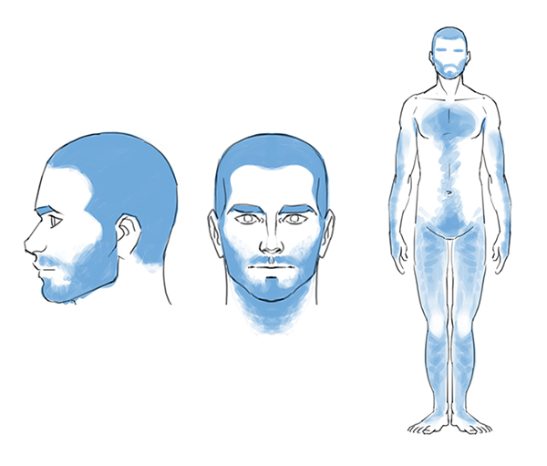
Quelques remarques au passage sur les coupes de cheveux et l'implantation de la barbe :
- J'ai remarqué que les hommes (je ne sais pas vraiment pourquoi ça m'a semblé revenir plus souvent chez les hommes que chez les femmes) ont tendance à systématiquement dessiner les oreilles par dessus les cheveux comme si elles étaient forcément dégagées, mais il arrive souvent qu'elles soient couvertes par les cheveux, ne serait-ce que partiellement.
- Dans une coupe de cheveux d'homme, la patte a une grande importance. Dans une coupe « classique », elle arrive à mi-oreille. Au-dessus, ça fait bizarre, au-dessous ça donne l'impression d'être long (à vous de jouer avec !). S'il y a de la barbe, les pattes peuvent se fondre dedans.
- Les « coins » sous la bouche où je n'ai pas mis de barbe peuvent finir par être recouverts, mais la barbe y pousse beaucoup moins vite qu'ailleurs, voire pas du tout.
- La barbe, avec le temps, peut monter très haut sur les joues.
- La barbe et la moustache ne sont pas nécessairement connectées.
- Pour suggérer une très courte barbe, on peut utiliser un changement de teinte vers le bleu, le vert ou le gris plutôt que de dessiner chaque poil.
- La calvitie apparaît sur l'arrière du crâne, mais aussi par l'avant, où elle a tendance à faire reculer la ligne d'implantation des cheveux. Ceci se fait plus rapidement sur les tempes que sur le haut du front en général.
Références.
Pour conclure cet article, j'aimerais citer un certain nombre de références extrêmement utiles.
Tout d'abord, les livres absolument incroyables d'Andrew Loomis. Si on met de côté un style très années 50 (et la vision publicitaire assez sexiste qui va avec), ces ouvrages sont des merveilles de pédagogie. A l'inverse, je vous déconseille très formellement les livres de Burne Hogarth et de George Bridgman. Pour s'entraîner au dessin d'après modèle, le site Posemaniacs est extrêmement bien conçu pour réaliser des dessins d'observation, en particulier pour les temps de pose courts. Je vous recommande aussi chaudement les guides très bien faits d'AlexDS1 et Coelasquid (dont celui-ci qui se concentre principalement sur les muscles). Enfin, pour des références photographiques de bonne qualité, le site Artsy Poses devrait vous être utile [le site étant down pour le moment, voici un autre lien pour un site du même genre qui nous est signalé par ilos (merci à lui !)].
Au passage, sachant à quel point il est difficile d'avoir accès à des modèles vivants, pensez à l'autoportrait, c'est toujours un très bon exercice.
En vous souhaitant un bon courage pour la suite, je vous rappelle que ces quelques conseils ne vous seront pas d'une grande utilité si vous ne les mettez pas en application. Une seule chose à faire : s'entraîner :D
Ajouter un commentaire
Commentaires

Bonjour cher Monsieur! je suis vraiment satisfait par votre article, et en qualité d'enseignant des Arts plastiques, je vous suit entièrement reconnaissant. Merci. Cordialement.
Je crois que vous avez inversé radius et cubitus quand même… ;-)
Comment comprendre en 5 minutes ce qu'on galère à dessiner depuis plus de 5 ans :)
Merci je trouve votre article génial !!
bonjour,est ce que vous avez un dessin qui explique la répartition des graisses plus précisément svp?

Le but de l'article est de donner des éléments d'anatomie, c'est-à-dire de fournir des outils. Il n'a jamais été question d'appliquer des proportions réalistes à tout type de dessin, ou de dire que l'anatomie suffit à faire un bon dessin, ou de dire que des personnages stylisés ont nécessairement une anatomie fautive.
Par ailleurs, il y a une différence entre ignorer l'anatomie et la connaître suffisamment pour s'en affranchir : c'est pour ça que la morphologie et l'étude d'après modèle vivant sont enseignées dans les écoles de dessin, même celles qui forment à un dessin stylisé, par exemple pour l'animation (les Gobelins ou Émile Kohl, par exemple).
Dans le dessin ultraréaliste peut être… Mais sinon l'anatomie n'existe pas en dessin. Connaitre l'anatomie est bon pour soit sans doute. Mais ce n'est pas cela qui fera un bon dessin pour autant. Partir des proportions pour les déformer ensuite si on veut : Oui. Mais faut arrêter de voir des problèmes d'anatomie dans les personnages… Ou alors Gaston lagaffe avec ses genoux toujours pliés ne pourraient marcher. Pareil pour Obélix, avec son poids sur ses petites jambes, au premier pas, il se casse les genoux.

Personnellement, j'aurais tendance à dire que le mannequin en bois n'est pas forcément une bonne idée: si on veut travailler sur des mouvements complexes, le mieux c'est de travailler son anatomie grâce à du dessin d'observation, que ça soit modèle vivant (le top) ou d'après photo (moins bien, mais bien mieux que le mannequin). C'est long et difficile, certes, mais c'est en forgeant qu'on deviens forgeron. Je déconseille son usage pour des positions de mouvement, dans la mesure ou il ne peut prendre que des poses très "statiques" et ne rend pas compte de la force ou de la dynamique d'un mouvement.

Le mannequin de bois, je pense, sert notamment de modèle pour dessiner des positions complexes du corps humain. Il permet entre autre de dessiner le "squelette" du sujet.
Par complexe, j’entends par là des positions de mouvement comme lorsque quelqu'un fait du sport (saut en hauteur, saut en longueur, service au tennis, lancer de disque, etc.) et les positions fixes (penseur de Rodin, position du lotus, etc.).
Bonjour, j'ai beaucoup de mal. J'aimerais savoir s'il est possible de dessiner avec un mannequin de bois.a moins que celui-ci soit trompeur? Merci de votre réponse.
Pour ce qui est Burne Hogarth, ce n'est bien sûr que mon avis personnel, mais je le trouve honnêtement très mauvais (j'avais vu un certain nombre de choses tout simplement fausses).
Je recommande vraiment le Loomis, qui est une merveille de pédagogie et qui est de plus gratuit.
Merci pour toutes les astuces et les liens ;)
Merci pour la grande qualité de cet article. Ca me donne envie d'explorer d'autres parties du site. Toutefois une question, pourquoi faut il éviter les livres de Burne Hogarth… C'est le seul que je possède à l'heure ou je me met a bosser l'anatomie: risque t'il de me déformer ? ^^
je suis très interressée par ce documentaire. Il est simple et clair.
Maintenant, je vais essayer quelques applications. Je ferais un nouveau
commentaire. Merci
ouf je vais enfin arrêter de faire des personnage trop "disloqués ! merci !
J'ai mis le texte à jour, merci à toi !
J'ai u le temps de chercher un liens pour les poses de nue, pour remplacer celui perdu.
http://lovecastle.org/draw/
Personnellement je le trouve plutôt pas mal.
Effectivement, le site a l'air d'être down. Je suis allé voir sur leur twitter, ça risque de durer un moment :
« ArtsyPoses is not dead but it will be asleep for a pretty long time probably, sorry for the inconvenience. Fortunately it will return better ! »
Je laisse le lien dans l'article pour l'instant, en espérant qu'ils rétablissent ça, je le changerai si je trouve quelque chose d'équivalent :)
Il me semble que le site de : http://artsyposes.com est mort :(. Est ce que quelqu'un peut vérifier pour confirmer? Merci :)
Bonjour :),
Je poste le lien d'un site ou l'auteur explique les notions de volume du visage. Les vidéos sont plutôt bien foutu. On a droite a des dessin sur le visage directement, ce qui est assez intéressant je trouve. le site est de Stanislav Prokopenko. J'ai mie la partie archive. Cependant c'est en anglais.
http://www.stanprokopenko.com/blog/archives/
bonne journée,
Encore un article de qualité Shin ! Ca donnerait presque envie de s'y mettre… ou de s'y remettre (je me suis arrêté juste avant les cours d'anatomie aux Beaux-Arts :p)
Et comme d'habitude, quand on voit les illustrations, on s'imagine toujours te connaissant que ça a été fait sur un coin de nappe. Tu passes quand pro ^^ ?
Merci pour ses précisions:), personnellement ça ma beaucoup aider a voir les démarches à privilégier ou à éviter.